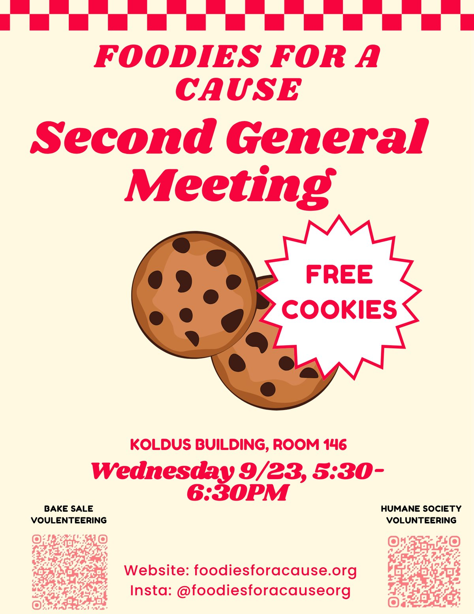

General Meeting
Second General Meeting
- When
- Wednesday, September 23, 5:30–6:30 PM
- Where
- Koldus Building, Room 146
- Food
- Free cookies
Come hear what's next for FFAC and sign up to volunteer at our bake sale and the Aggieland Humane Society.
Tap the flyer to open it full size and scan the sign-up QR code.